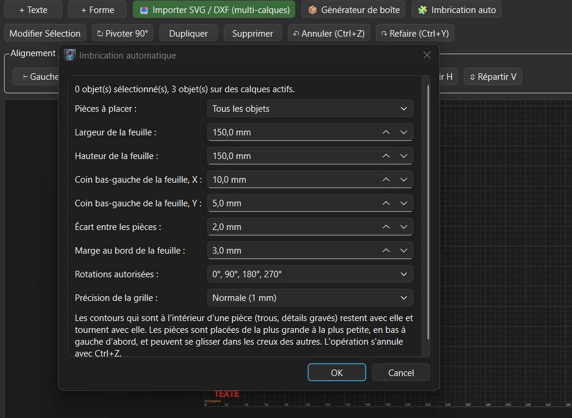

Imbrication automatique (Nesting)
Optimise l'utilisation de ta matière en rangeant intelligemment tes découpes.
- Placement optimisé : tri de la plus grande à la plus petite pièce, en bas à gauche de la feuille.
- Gestion des formes complexes : les petites pièces se glissent dans les creux, et les trous/détails restent solidaires.
- Paramètres ajustables : choix des rotations (0°, 90°, etc.), espacement entre pièces et marges de bord.